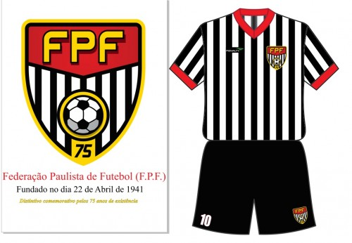

Serviço de Gandulas para Eventos Esportivos

GANDULAS
Os gandulas são figuras essenciais nos eventos esportivos, embora muitas vezes passem despercebidos pelo público. Esses profissionais desempenham funções fundamentais para o bom andamento das partidas, garantindo que os atletas possam se concentrar totalmente no jogo sem interrupções desnecessárias. No futebol, por exemplo, os gandulas têm a responsabilidade de recuperar rapidamente as bolas que saem de campo, permitindo que a partida continue de forma fluida. Esse trabalho exige atenção constante, agilidade e conhecimento sobre o ritmo do jogo, pois qualquer atraso ou distração pode impactar diretamente no desempenho das equipes. Além da função prática, ser gandula também envolve disciplina e comprometimento. Muitos jovens ingressam nessa função como forma de se aproximar do esporte e aprender com os profissionais em campo. É comum que clubes ou instituições esportivas ofereçam treinamentos específicos para que os gandulas compreendam regras básicas, posicionamento adequado e atitudes seguras durante a partida. Dessa forma, eles não apenas auxiliam os atletas, mas também aprendem sobre organização, trabalho em equipe e respeito às normas esportivas. O papel do gandula vai além da simples coleta de bolas. Eles também contribuem para a segurança dentro do campo, evitando que objetos estranhos ou perigosos interfiram no jogo. Além disso, durante torneios e competições internacionais, a presença de gandulas bem treinados é crucial para manter a imagem profissional do evento. Muitos deles sonham em seguir carreira dentro do esporte, seja como árbitros, treinadores ou mesmo atletas, usando essa experiência como ponto de partida para aprender a dinâmica das partidas e o funcionamento dos clubes. Apesar de sua importância, os gandulas muitas vezes não recebem o reconhecimento que merecem. Para muitos espectadores, eles são apenas “meninos correndo atrás da bola”, mas a realidade é que seu trabalho exige atenção constante, rapidez de raciocínio e resistência física. Cada partida exige concentração máxima, já que um simples erro pode atrapalhar o andamento do jogo ou causar situações de risco. Por isso, grandes clubes e ligas esportivas valorizam profissionais que exercem essa função com dedicação, muitas vezes oferecendo uniformes, treinamentos e até oportunidades de crescimento dentro da organização. Em suma, os gandulas são parte fundamental do ecossistema esportivo. Eles garantem a continuidade das partidas, promovem a segurança em campo e, ao mesmo tempo, aprendem importantes lições de disciplina e profissionalismo. Embora silenciosos, sua presença é indispensável, e seu trabalho reflete um compromisso com o esporte que vai muito além da simples entrega de bolas — é um exercício de responsabilidade, velocidade, atenção e paixão pelo que fazem.
MAIOR CAMPEÃO DO MUNDO
CBF convoca gandulas para atuar em partidas oficiais do futebol brasileiro. A função é essencial para garantir dinamismo e organização durante os jogos. Buscamos pessoas responsáveis, atentas e comprometidas com o esporte. Os selecionados participarão de eventos de grande visibilidade nacional. Fique atento aos canais oficiais da CBF para inscrições e orientações.
FESP

A Federação Paulista de Futebol (FPF) é a entidade responsável por organizar e administrar o futebol no estado de São Paulo. Fundada em 1941, a FPF coordena competições importantes como o Campeonato Paulista, uma das mais tradicionais do país. A federação atua no desenvolvimento do futebol profissional e de base, promovendo a formação de atletas, árbitros e demais profissionais do esporte, além de fortalecer o futebol paulista em nível nacional.
FERJ

A Federação de Futebol do Estado do Rio de Janeiro (FERJ) é a entidade responsável por organizar o futebol carioca. Ela administra competições tradicionais como o Campeonato Carioca, uma das mais antigas do Brasil. A FERJ atua no desenvolvimento do futebol profissional e das categorias de base. Também é responsável pela formação e organização da arbitragem no estado. Seu trabalho contribui para a valorização e fortalecimento do futebol do Rio de Janeiro.